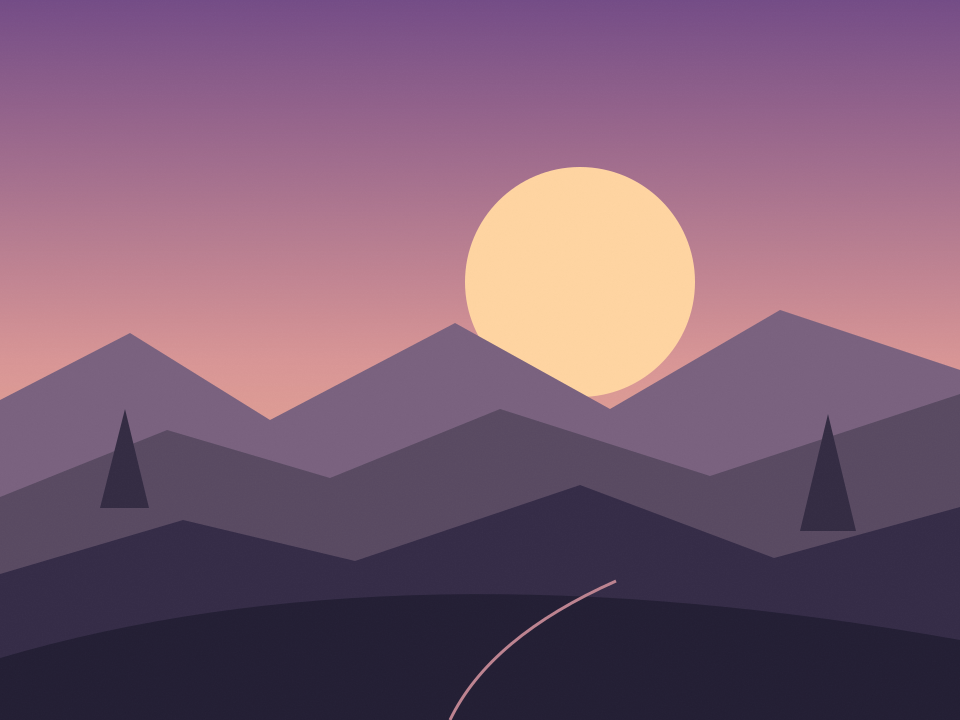

sunset ~ bu günün xəbərləri● Canlı
Günün işığı sönməmiş,
xəbərləri oxu.
Dünyada nə var, nə yox? Günün hekayələrinə öz baxış bucağından bax.
MARAQLI QAL. XƏBƏRDAR OL.AŞAĞI BAX ↓

✦ SeçilmişBAŞQA BİR BAXIŞ BUCAĞIŞəhər yavaşlayanda:
axşamın bizə öyrətdikləri
Tələsik addımların arasında bir az dayanmaq. Şəhərin axşam ritmində özümüzə vaxt ayırmağın kiçik yolları.
GÜNDƏMDƏ NƏ VAR?
Son xəbərlər✳
Axtarışına uyğun nümunə hekayə tapılmadı.